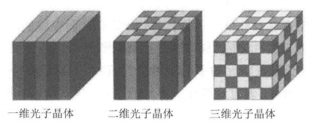

在“超材料/超表面”术语出现前，研究人员已经使用人工周期结构来实现对电磁波的频率、振幅、相位与极化的调控.
这种调控是采用结构尺寸与工作波长相比拟的单元实现的.
e.g. 频率选择表面（FSS）、电磁带隙（EBG）结构、透射阵列（TA）、反射阵列（RA）……
利用人工介质调控电磁波的设计可以追溯到几百年前，人们尝试通过周期的平面阵列，即电感格栅结构来控制电磁波的反射与透射.
在微波到光波的频段范围中，最经典的平面周期阵列的代表之一就是具有空间滤波特性的频率选择表面.
对于FSS物理机理的理解是从对衍射光栅的研究演变而来，利用发丝制成等间距的光栅可以将白光分解为单色光.
这里的发丝其实是指金属丝.
基于这种简单的频率滤波过程，各种FSS结构被提出并广泛应用于微波、红外乃至可见光波段.
通过精巧的形状于精确的尺寸设计，由具有自谐振效应的周期单元组成的平面阵列可以表现出带通或带阻的滤波性能.
FSS就是由一种单元周期性排列组成的，少数情况下也可以是准周期性排列的.
带通就是允许特定频率范围通过；带阻就是阻止特定频率范围通过.
常用的自谐振单元结构包括偶极子型的“耶路撒冷十字”和孔径型的“缝隙”等.
自谐振单元是FSS常用的一种单元，但非唯一.
由于传统的FSS单元式基于半波长尺寸设计的，且电磁波与FSS阵列的相互作用取决于Floquet-Bloch模式，因此很难将其归类为狭义上的亚波长结构的超表面范畴.
光子晶体（PBG）结构通过将不同折射率的介质周期性排列，使某一频率区域内光子态密度为0（光子在此区域无法传输），从而呈现光子带隙的特性.
由于制作光学尺寸的光子晶体难度较大，早期研究更多聚焦在厘米级的微波光子晶体上，即EBG结构.
按照结构排列方式的不同，PBG可以分为一维、二维和三维结构.

20世纪末，J. B. Pendry等人提出采用金属线（Wire）周期阵列结构与分裂环谐振腔（SRR）周期阵列结构来分别实现负介电常数与负折射率.
21世纪初，D. R. Smith团队通过将金属线结构与分裂环谐振腔结构结合，首次实现了一定频率下的负折射率现象.
2011年，Capasso等人提出了广义斯涅尔定律，阐明了电磁超表面的概念，实现了基于平面人工介质的异常折射与反射现象.
通过调控电磁波的振幅、相位、极化等电磁波物理特征的局部突变特性，超表面能够灵活改变电磁波在空间中的传播与分布.
研究者们利用超表面实现了各种新颖的电磁波调控功能：
2014年，美国宾夕法尼亚大学的Engheta与东南大学的崔铁军分别独立提出了数字超材料的概念.
Engheta工作的核心是使用数字位的手段来描述等效媒质，其仍属于等效媒质超材料的范畴.
一般提及超材料时，指的就是等效媒质超材料.
等效媒质并非真实存在的，而是一种等效模型，其存在依赖于“均质化效应".
均质化效应由于材料内部的微结构单元比入射的电磁波长小得多，因此可以近似认为电磁场在穿过超材料的单一结构时，可以认为近乎没有变化，但是对于整个超材料而言，其累加起的尺寸足够大，电磁场会发生变化，
崔铁军摒弃了等效媒介的表征方法，提出用数字编码来表征超表面，通过改变数字编码单元的空间排布控制电磁波，进而实现了可编程材料.